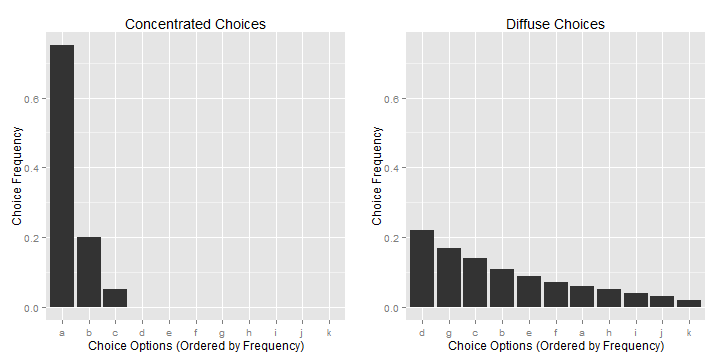
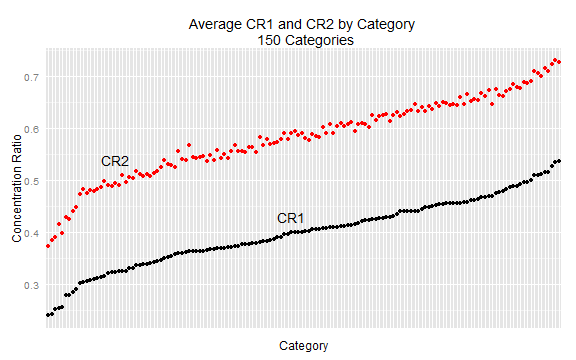
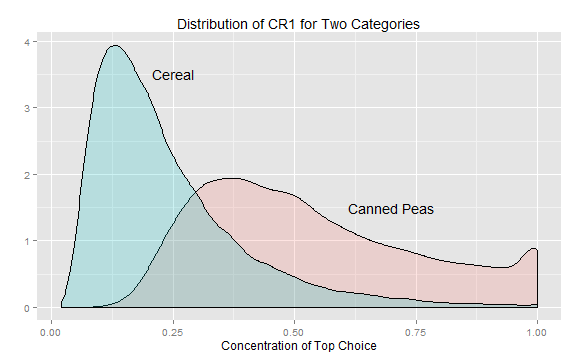

Consider the following thought experiment: Suppose you lined up all product purchases you made over a year in some product category, e.g., canned tomatoes or paper towels. How similar would they be? An extreme case is that they were all the same, i.e., you always buy the same product, or they were all different, i.e., you never buy the same. How should we judge similarity in the more realistic scenaio where you buy a certain product quite often, but not all the time? We can start by calculating the number of times you chose your most preferred option divided by your total number of purchases. Then we we can do the same for your next most preferred, your third most preferred etc. The result will be probability distribution corresponding to the relative frequency with which you purchased the products in your choice portfolio. Here are two examples of choice frequency distributions:

The distribution on the left is quite skewed with the most preferred choice being made over 60% of the time. The distribution on the right is much more diffuse with the top choice being made only about 20% of the time. We define choice concentration as any measure that captures the degree of concentration among these choices. There is no unique way of doing this. A simple measure is simply the relative choice frequency of your most preferred option. Based on this measure we would say that the choices on the left are more than three times as concentrated than the choices on the right.
Should we expect decision makers to have high or low choice concentration? If a decision maker voluntarily seeks a varied experience from choices or is induced to changes in decisions by external stimuli, we should expect to see low choice concentration. On the other hand, if a decision maker seeks consistency in choices or is highly habit driven or is constrained in some way from varying choices, we should expect to see high choice concentration. Furthermore, it is possible that the same decision maker may seek low choice concentration in some contexts and high concentration in others.
Here we will restrict ourselves to choices made in grocery retail and use a large sample of US households from Nielsen. This sample contains information on grocery purchases made by over 100,000 households over several years in hundreds of product categories.
As a measure of choice concentration, we calculated the relative expenditure on a household's top choice and top two choices in a category compared to the houshold's total category expenditure. We call this the concentration ratio or CR1 (CR2 for the top two choices). The higher CR is, the more concentrated the household's spending is on the top choice. This is one of many possible measures of choice concentration.

This plot shows that for the average household, choices are highly concentrated in grocery retail. Note that a "choice" here is buying a single product out of all the possible products in a category, e.g., a particular brand, size, flavor etc. It is somewhat shocking that in categories where hundreds of alternatives are available, the average household spends between 30 and 50 percent of their expenditure on a single product (or 40 to 75 percent on the top two products).
It seems clear that the answer to the question posed above - how similar or concentrated would the choices for a household in a product category be? - depends on both household and product category characteristics. For example, household characteristics suchs as size and income may influence choice concentration. Similarly, some product categories may naturally be more conducive to variation in choices than others (e.g., categories where flavor is an important attribute versus more mundane categories like paper towels).
In the figure above we showed choice concentration for the average household. How large is the variation in this measure across across households? The plot below shows the distribution of CR1 across households for two categories.

This plot illustrates that not only does choice concentration vary across categories, it also strongly varies across households. Even in the Cereal category - on average a low concentration category - there is a segment of housholds with CR1 measures above 50 percent. Similarly, for Canned Peas, which on average is high in concentration, we see households who are highly concentrated in choices and households low in concentration. Can some of this variation be explained? And if so, does this provide new insights into the psychology of choice?
Some factors that might explain variation in choice concentration within a category are:
Over how long a time period are choices observed? A household...
How many choices are made? It is possible that....
The age of the decision maker could .....